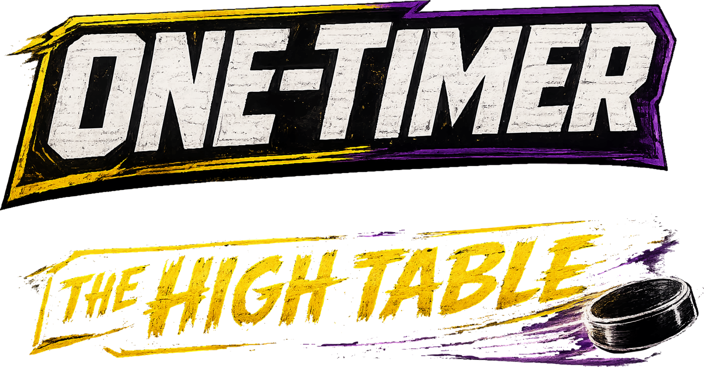

move to steer · hold
LEFT-CLICK
to TRAP ·
RIGHT-CLICK
to BLAST · score in the far goal

SIDE ANGLE · LIVE AIR HOCKEY
INSERT COIN — PUSH BLAST TO START
EXHIBITION
CHOOSE YOUR KNOCKER
CHOOSE YOUR RINK
CHOOSE YOUR PUCK
JAILBREAK · EVERY TABLE UNLOCKED
MOVE ← → · ↑ ↓ / STICK · PICK ENTER / A / CLICK
DROPPING THE PUCK…
PAUSED
THE HIGH TABLE
CONTROLS — toggle what's live
MOUSE
move the cursor to steer · click TRAP
KEYBOARD
WASD / arrows to steer · C TRAP · V BLAST · SPACE GET BIG
STICK (F300 / pad)
left stick / d-pad · A TRAP · B BLAST · RT GET BIG
▶ RESUME